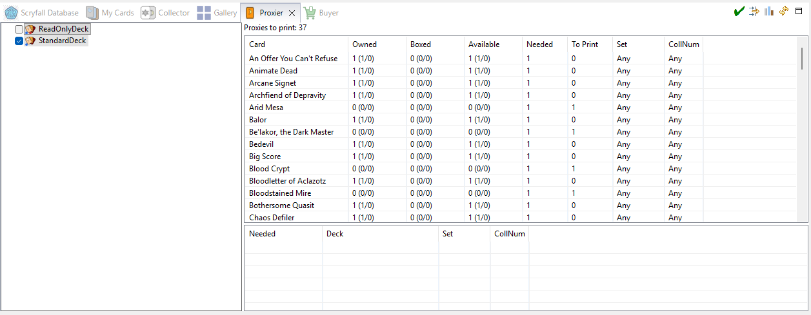

Proxier
The Proxier view answers one question: to put these decks together, which proxies do I
need to print? It checks several decks at once against everything you own, and leaves out the copies
already used by your boxed decks.

How to use it
- On the left, check the decks you want to build (check a folder to take all its decks). Boxed decks
and owned decks aren't listed: their cards are already in use,
and they count in the Boxed column.
- The table on the right lists every card those decks need, with the total of proxies to print above it.
- Click a row to see, at the bottom, which deck (main list, sideboard or extra list) needs that card.
- The selected card shows in Card Info as a proxy — the way it will look printed.
The columns
| Column | Meaning |
|---|
| Card | The card. |
| Owned | How many copies you own, anywhere (genuine / proxy). |
| Boxed | How many of them are already used by boxed decks and owned decks. |
| Available | Owned minus Boxed (genuine / proxy). |
| Needed | How many copies the checked decks need, all together. |
| To Print | The result: Needed minus Available (never below 0) — how many proxies to print. |
| Set, CollNum | The printing (see Exact Match). |
Options
- Exact Match — off: any printing of a card counts (one row per card name). On: one row per exact
printing (set and collector number), counting only copies of that printing.
- Only To Print — only the rows that need at least one proxy.
- Refresh — recount, for example after boxing a deck.
- Create Collection — create a Wishlist/To Print collection (named ProxiesToPrint)
with the cards to print, as virtual proxies. Once you have printed them, move them to a Standard
collection: they become owned proxies. See Wishlists and to-print lists.
To print the proxies, export the to-print collection with the
Print Proxies HTML Mobile
format. See
Printing proxies.
See also: Proxies · Boxed decks
· Buyer